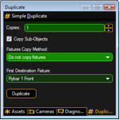

You can duplicate objects via a mechanism in a comfortably way. Therefore do a multi selection in any view via left mouse button + 'Ctrl or Shift’ and select the menu entry 'Functions - Duplicate’. The Duplicate window appears:

You can set the number of desired copies. If the objects contain sub-objects select if these are copied too.
If fixtures are selected to duplicate it is possible to select 'Use other Fixtures’. Select the 'First Destination Fixture’ inside the list box. After pressing the 'Duplicate’ button the 'First Destination Fixture’ will be moved to the X,Y,Z position of the source fixture and so on. This mechanism is useful to create symmetrical stage sets. For example you have to setup the number of all used fixtures inside the set. Do the setup for the left side of trusses and lanterns. After that you can duplicate the left side and mirror it to the right side.